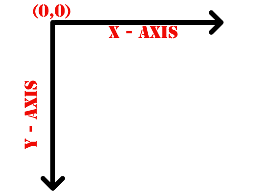
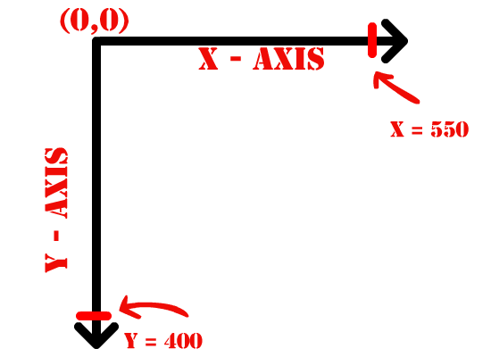
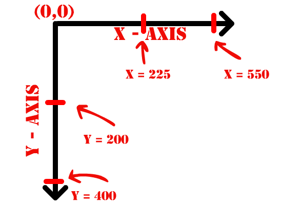
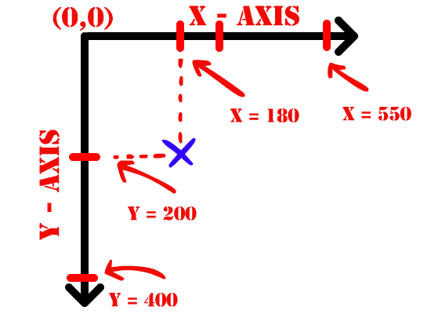
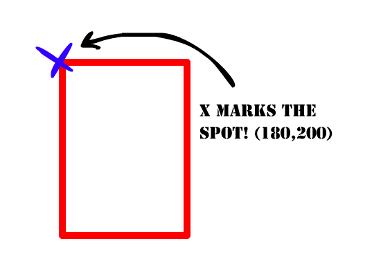
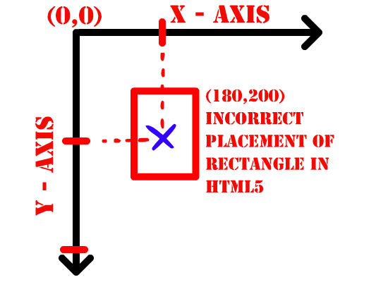
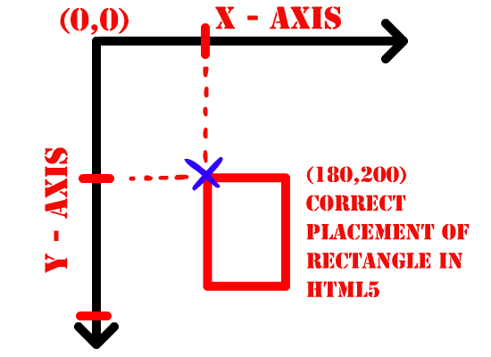

Now on to the next phase of our operation!
As you saw in the last tutorial, we created a simple 50 X 50 red rectangle at the coordinates 200x and 200y. Now let's take a closer look at how we did that.
The Javascript coordinate sytem is the same as Actionscript's cordinate system. So if you're coming from Flash, you can breathe a sigh of relief. For those of you who don't know what I'm talking about, here's a primer in coordinates:
Remember in school when they gave you a set of Cartesian coordinates? Remember how the 0,0 was dead center in the middle of the x and y axes on your piece of graph paper? Well, those rotten mongrels who made Javascript want nothing to do with that! See, they're MEAN and want to confuse you! In fact, coordinates in the world of Javascript start at the top left corner, meaning our 0,0 is at the upper-left corner of the canvas. Here's a crude diagram to display this:
Now luckily they didn't screw up the graph in other ways, so the X axis is still the one that runs horizontally and the Y is still the vertical one. So if we place these axes on our 550 X 400 canvas, we'll have the following:
...and if we add the halfway points we'll have:
Let's pretend we need to plot the following coordinates. Think for a moment where they would go.
x =180 y =200
Any idea?
And here's the solution! X marks the spot!
If this doesn't make much sense to you right now, fret not. You'll have plenty of time to see more examples of this later. If anything sinks in, just remember that the 0,0 is in the top left corner when you're working in Javascript. After you do a gazillion examples, it'll sink in, trust me. Actually, it's kinda like playing Battleship, so it's not entirely boring.
Also, keep in mind one very important fact:
HTML5 adds rectangles to the canvas in relation to their TOP-LEFT corner.
What do I mean? Well, here's another crude diagram:
If we return to our axes, let's plot a rectangle as you may THINK it's plotted, then once again how it ACTUALLY IS in HTML5.
Whereas:
Understand the difference? This is very important when you're placing rectangles on the screen, and VERY important when you need to deal with issues such as rotation. But don't freak out about it. All you need to remember is this: when you draw a rectangle on the canvas, it's being PLACED in relation to its top-left corner. Try to imagine the canvas as a big board and you're pinning a bunch of credit cards to it by their upper-left corner. It's not that difficult to understand in the end, is it?
So that said, let's return to our dear friend, the red rectangle from last time. Here's the code again:
Now the last two things we added were:
These are the lines that make the rectangle appear on your screen.
Before we added the rectangle, we invoked: context.fillStyle = "#ff0000"
Right?
Now remember that variable that I told you not to make too long in lesson 1? Well, that's our dear buddy context making his grand appearance once again. Almost every time you need to draw a line, make an arc or plug in the coordinates for a rectangle you'll need to invoke context first, followed by a dot.
Fill Style is nothing more than specifying the color that you'll attribute to a filled object. In our case, this is the color you'll be filling your rectangle with. Make sure you specify this BEFORE creating the object you want to fill. The funny number after that with a hash tag is a hexidecimal number. Each number/letter corresponds to a color hue. If you google Hexidecimal chart, you'll find a number of examples of various hexidecimal values an their corresponding colors. I ain't gonna get into the nitty gritty of hex values here! They're amazingly simple, though, so experiment away and plug some different colors into our rectangle!
Oh, make sure you SAVE your code before you refresh your browser window, by the way! I should probably have written that in Lesson 1.
So after you've seen a whole bunch of colored rectangles, let's get down to changing the size and position of the rectangle itself.
On the line directly below our hexadecimal number we have, once again, our dear friend context, followed by the method fillRect. Now, make sure you understand that the fill here is NOT a verb and does NOT fill in your rectangle for you! The fill is simply a TYPE of rectangle that you can draw. The other two, which we'll see in a moment, are strokeRect() and the super useful clearRect().
Now what are those four numbers in parentheses? Well, remember our coordinates? The first two numbers are our X and Y values! In fact, 99% of the time, the order is: X,Y,WIDTH,HEIGHT if you can add 4 parameters (as in the case of this rectangle). So if you're freaking out about where to put the x value, just remember that it's first! Now sing a little song to yourself to remember the X,Y,WIDTH,HEIGHT order.
Actually, let's sing together...Ready? "X AND Y AND WIDTH..."
Ok, you don't need to do that. But it helps!
Ahem.
Let's try to change some numbers around! Go ahead and change the fillRect code to this:
..and now we've got a long, red rectangle! Fun! As always, when I teach you new stuff like this, I encourage you to mess around and experiment a bit. See if you can make a rectangle that runs parallel to the y axis. Try making a giant rectangle exactly in the center of the canvas. Woo! Fun! Dare ya to make a green rectangle (#00ff00) that runs all the way across the screen horizontally! Tweet me @benwhi if you can do it!
Now before we call it quits for this lesson and start talking about lines next time, I'd like to cover the OTHER two types of rectangles you can draw in Canvas: namely: strokeRect() and clearRect().
strokeRect() is pretty much what you think it is: a rectangle with strokes around its border. So if a fillRect() is a full one, a strokeRect() is an empty one!
strokeRect() also takes 4 parameters: X,Y,WIDTH,HEIGHT. Suddenly I feel the need to burst into song! But before you draw a stroke rectangle, don't forget to change one thing first:
Change your context.fillStyle to context.strokeStyle. By doing so you specify what color the BORDER for the rectangle is, as there's no filling for a stroke rectangle. Try it out! Change your code to the following and tell me what you see!
Why, it's an empty, blue retangle! Oh, by the way, keep in mind that once you've set the fillStyle or strokeStyle, you can draw as many rectangles as you like and won't need to include another strokeStyle or fillStyle. I mean, you CAN.... but it's a little superfluous! Just make sure, as I mentioned before, that you specify the style BEFORE you draw the rectangle!
Now for the last kind... the amazing clearRect(). Why so amazing? As you'll see over the course of the next few lessons, clearRect() will be of great service to you in animation. Why? Because in order to create the illusion of movement with Javascript, you often need to clear the stage. How do you do this? By cleaning the entire canvas with a clearRect(), that's how!
But before we start talking about animation, we'll need to talk about all the other cool features that the canvas can offer! And before we do that, we need to give an example of clearRect(), so here it is!
Let's go ahead and erase the two stroke lines we've just created and replace them with this code:
Hmmm, well that's strange! I didn't draw a rectangle with a hole in it! Yes, you did! How? By drawing the first (fillRect) rectangle stretching from 0x to 300x and from 0y to 300y. The second rectangle (clearRect) draws a hole in the fillRect! That's exactly what clearRect does.
So that's the end of part two. I'd like to invite you to experiment with some rectangles on your own. Maybe you could draw an image or spell your name with rectangles on the screen. Practice makes perfect! Tweet 'em over to me if you want, too. Tomorrow we'll talk about the various types of lines and arcs you can draw in canvas.
Thanks for following along! Code didn't work for you? Hate me? Are you my illegitimate child? Send input anytime!
Until tomorrow!
-Ben
@benwhi
Onward to Lesson Three!
Back to Lesson One
Back to Index